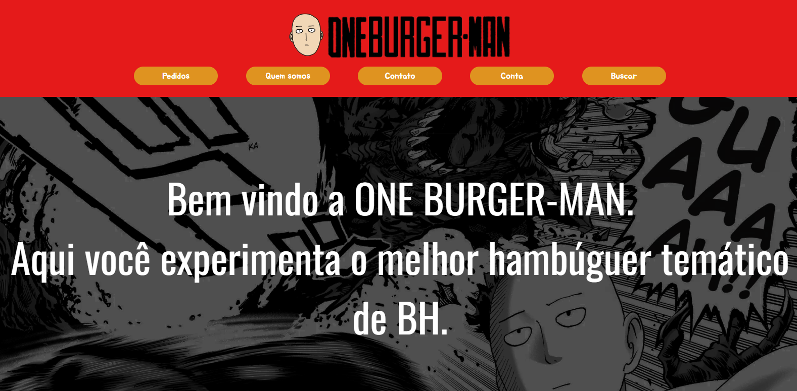
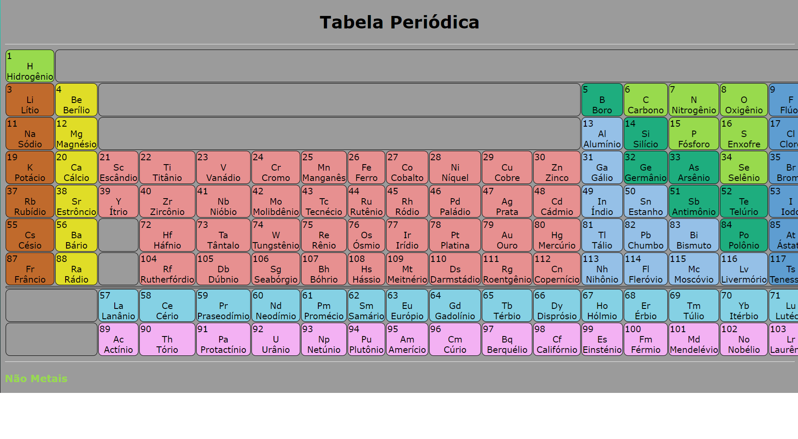

Site de Delivery
Site de uma hamburgueria com várias páginas, como pedidos e quem somos. Feito com HTML e CSS.
Olá, eu sou
Técnico em Informática e desenvolvedor
Técnico em redes e arquitetura de computadores, estagiário de suporte técnico e estudante de Ciência de Dados e IA na PUC Minas. Procuro um estágio onde eu possa aprender com um time e contribuir com projetos reais.
Moro em Belo Horizonte (Palmeiras) e curso o 1º período de Ciência de Dados e Inteligência Artificial na PUC Minas, com previsão de conclusão em 2029. Na prática, já atuo em suporte técnico, redes e organização de inventário de TI, e gosto de criar sites e programas.
Procuro estágio como:
Meus certificados digitais podem ser conferidos no Credly. Entre as certificações estão os cursos do Cisco Skills for All:

Site de uma hamburgueria com várias páginas, como pedidos e quem somos. Feito com HTML e CSS.

Tabela periódica com os elementos coloridos por categoria. Feita com HTML e CSS.
Aberto a oportunidades de estágio e trabalhos futuros. Belo Horizonte, MG.